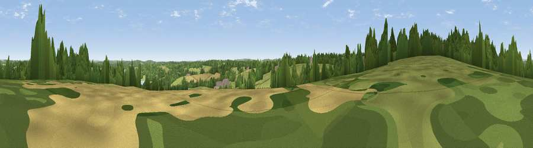

Viewpoint near Woods Green
#30510 in England · top 32% of its area beats it · near Woods GreenWhere it is
The exact computed spot (TQ 64225 32625). Click the marker for map links.
The view, rendered

A 360° render of this exact spot computed from the terrain model, tree cover and land cover — summer colours, afternoon light, calibrated against photographs of famous viewpoints. Real trees, hedges and buildings will differ in detail.
The panorama
Grey silhouette: terrain skyline in each direction (720 bearings, Earth curvature and refraction included). Dashed green: skyline with trees (+15 m) and buildings (+8 m) as obstacles. Blue strip: how far the ground is visible on each bearing.
Where the view opens
Wedge length = distance to the farthest visible ground on that bearing (vegetation-aware). Rings at 10, 25 and 50 km.
What fills the view
50% grassland · 35% woodland · 11% cropland · 2% water · 2% built-up
Angular shares of the visible panorama (visual magnitude), not map area. Landscape diversity 0.48 (0–1 Shannon).
Key numbers
More beautiful places nearby
The staircase of upgrades: each row has a higher view potential than everything closer. Driving times are estimates from straight-line distance, calibrated against real road routing — check an actual route before setting out.
| Place | Direction | Drive | Score |
|---|---|---|---|
| Viewpoint near Woods Green | NW · 1 km | ~4 min | 46.3 |
| Best Beech Hill | WSW · 2 km | ~6 min | 55.6 |
| Brightling Obelisk [Brightling Down] | SSE · 12 km | ~22 min | 69.1 |
| Viewpoint near Three Oaks | SE · 27 km | ~43 min | 69.3 |
| Viewpoint near Guestling Green | SE · 29 km | ~46 min | 72.2 |
| Viewpoint near Fairlight | SE · 30 km | ~47 min | 74.7 |
| Cliffe Hill | SW · 30 km | ~47 min | 79.3 |
| Viewpoint near Wilmington | SSW · 30 km | ~48 min | 81.8 |
51.06946, 0.34259 · source: screening · position refined by local search. Computed location — check access rights before visiting.